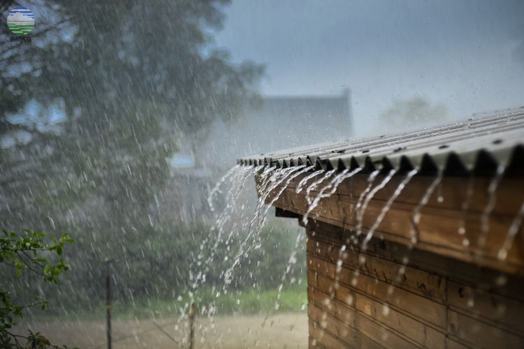

Halloo gaaiis
Hujan adalah sebuah presipitasi berwujud cairan, berbeda dengan presipitasi non-cair seperti salju, batu es dan slit. Hujan memerlukan keberadaan lapisan atmosfer tebal agar dapat menemui suhu di atas titik leleh es di dekat dan di atas permukaan Bumi. Di Bumi, hujan adalah proses kondensasi uap air di atmosfer menjadi butir air yang cukup berat untuk jatuh dan biasanya tiba di daratan. Dua proses yang mungkin terjadi bersamaan dapat mendorong udara semakin jenuh menjelang hujan, yaitu pendinginan udara atau penambahan uap air ke udara.
Berikut ini adalah gambar hujan:

Berikut ini adalah suara hujan: